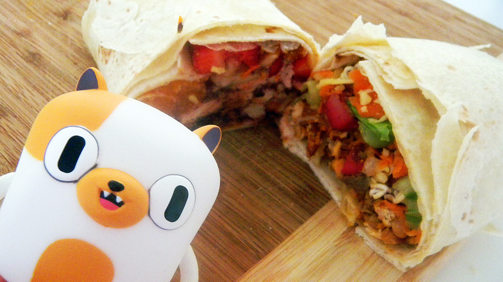

Everything Burrito
Home

Description
An extremely large burrito filled with almost everthing that is food. Jake prepares the everything burrito for breakfast for Finn and himself.
The burrito eventually meets its end when it is buried by Jake in a grave outside Tree Fort.
Ingredients
(Makes 4 Burritos)
Sweet Side
- ¾ cup heavy cream
- Pink food colouring
- 1 slice of pumpkin pie
- 1 small Belgian waffle
- 1 slice chocolate cake
- 1 slice vanilla cake or pound cake
- 1 plain glazed doughnut
- 1 medium-sized pancake
- ¼ cup pretzels
- ½ cup cereal
- Red grapes
- ½ grapefruit
- ¼ cup pineapple
- ½ banana
- 4 strawberries
- ½ apple
- 1 mandarin orange
- 1 plum
- Lemon slice
- Large tortillas
Savoury Side
- 1/2 slice of bread
- 2 sunny side up eggs
- Scrambled eggs (made with 2 eggs)
- 3 meatballs
- 2 slices of ham
- 1 slice of bacon
- 1 slice of turkey
- 1 hot dog
- 1 slice of spam
- 1 tomato, diced
- ½ cup diced pumpkin, steamed
- ¼ cup baked beans
- 1 taco
- 1 hamburger
- 1 sandwich
- 1 serving French fries
- Instant noodles, dry
- 2 leaves of lettuce
- ½ carrot, shredded
- ¼ cup shredded cheese
- 2 olives
- Large tortillas
Steps
Sweet Burrito
- Add a few drops of pink food colouring to the heavy cream, and whip until soft and airy.
- Lay out a large tortilla, and spread the pumpin pie filling on top. Drizzle the orange juice over the Belgian waffle.
- In a bowl, crumble the chocolate cake, white cake, doughnut, waffle and one pancake.
- Break apart the pretzels and add to the bowl with the cereal and the pink whipped cream. Mix everything together.
- Spoon this onto the burrito.
- In a separate bowl, mix together all the fruit and squeeze over some lemon juice.
- Place the fruit on top of the cake mixture, and roll up the burrito.
Savoury Burrito
- Pladce the slice of bread in a food processor and pulse to turn it onto breadcrumbs.
- In a frying pan, cook together the sunny side up and scrambled eggs, ham, meatballs, bacon, turkey, hot dogs and spam.
- Disassemble the taco, sandwich and hamburger, and add the fillings to the frying pan.
- Add the sliced tomato, pumpkin and beans, and mix well.
- Crumble and mix in the taco shell and the bread crumbs. Let this slightly cool.
- Lay out a large tortilla and place some French fries on top. Spoon over the meat mixture, and then crumble the instant noodles on top.
- Place the lettuce, shredded carrot and cheese on top, then roll up the burrito.
Joining the Burritos
- Cut each burrito in half, and join the opposite halves together, so that you are left with a burrito that is sweet on one side, and savoury on the other side.
- Wrap another tortilla around the seam to secure the halves together, and top with a speared olive.
PankoBunny